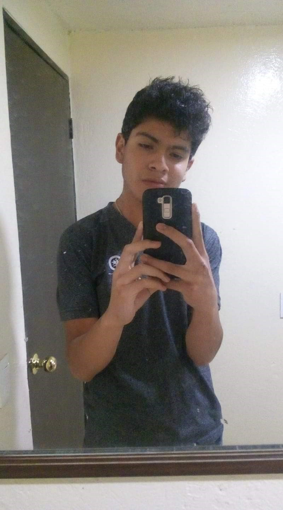
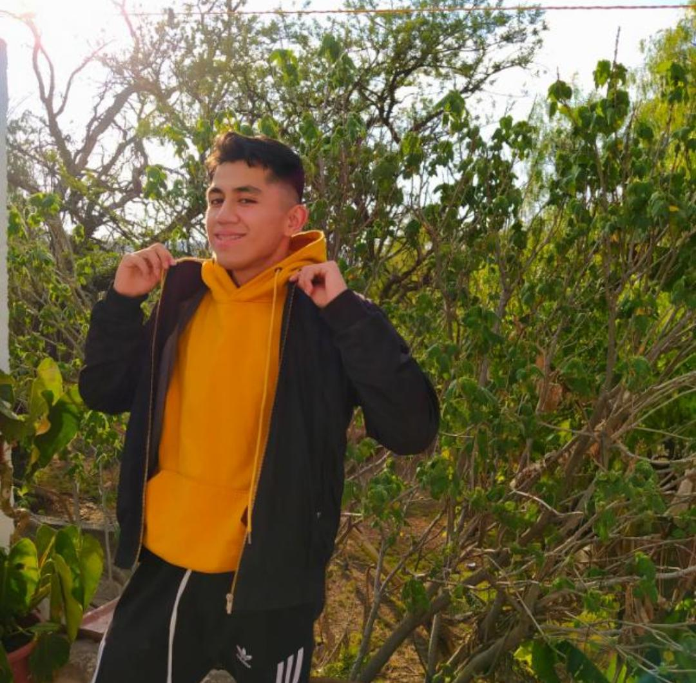
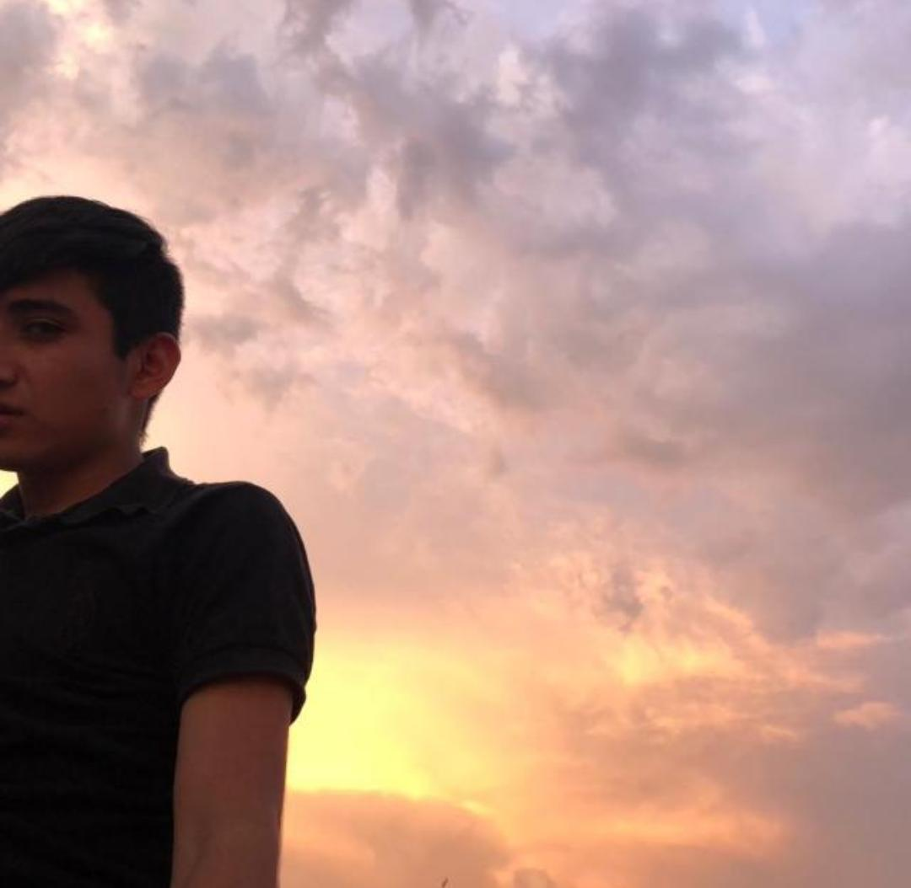

Para mi ellos son muy importantes algunos de ellos los conozco desde hace mucho tiempo y otros hace algunos meses
Ricardo

Lo conozco desde secundaria, me apoyaba en todo y yo a el. Es una persona muy inteligente, respetuso
le tengo un gran cariño a pesar de que hace mucho tiempo que no lo veo porque el estudia algo lejos y ya no tenemos tiempo como antes.
Tengo muy buenos recuerdos con el, pero no siempre fuimos tan buenos amigos cuando lo comenzaba a conocer no me agradaba tanto
Levi
A el lo conozco desde primaria, pero en realidad hasta secundaria hablamos y por razones raras y creo que bonitas nos hicimos amigos
Levi una de las personas más importantes en mi vida, es un niño maravilloso y demasiado inteligente, le gustan mucho los temas bobre política
Es muy divertido y alegre, un muy buen amigo, cuando lo necesito me escucha y me ayuda
También por las mismas razones que Ricardo nos distanciamos un poco, pero el sabe que tiene mi apoyo para todo lo que necesite
Natanael

Es muy alegre y me ayuda en cualquier cosa, también apesar de que soy muy molesta aveces me soporta jsjs
Oziel

Es un niño preciso y no solo físicamente, también por su forma de ser, es muy atento, tiene unos sentimientos muy bonitos, es muy sensible